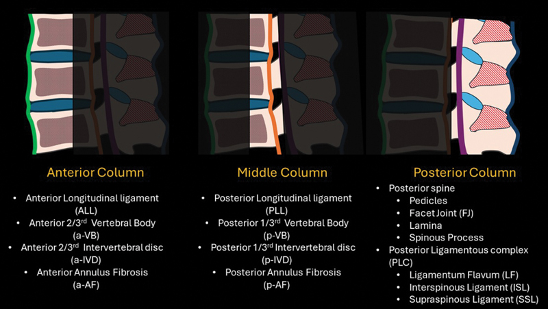
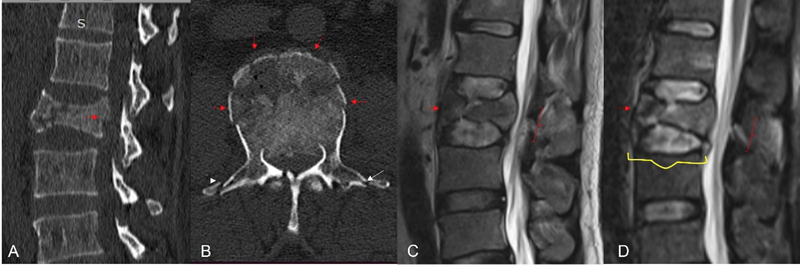
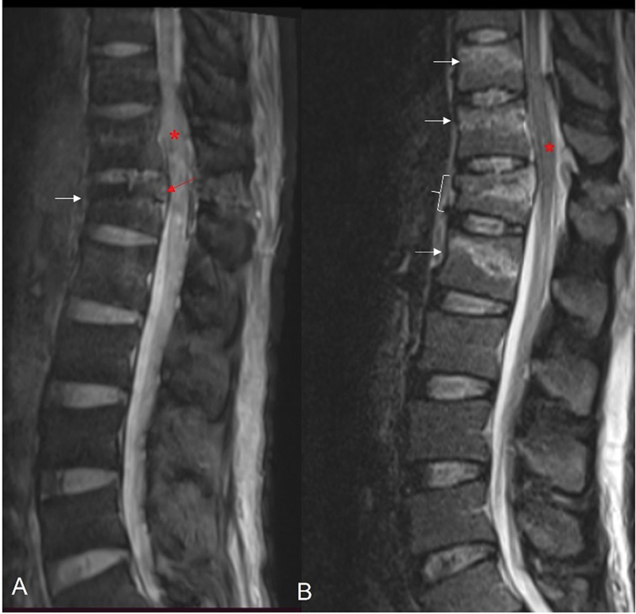
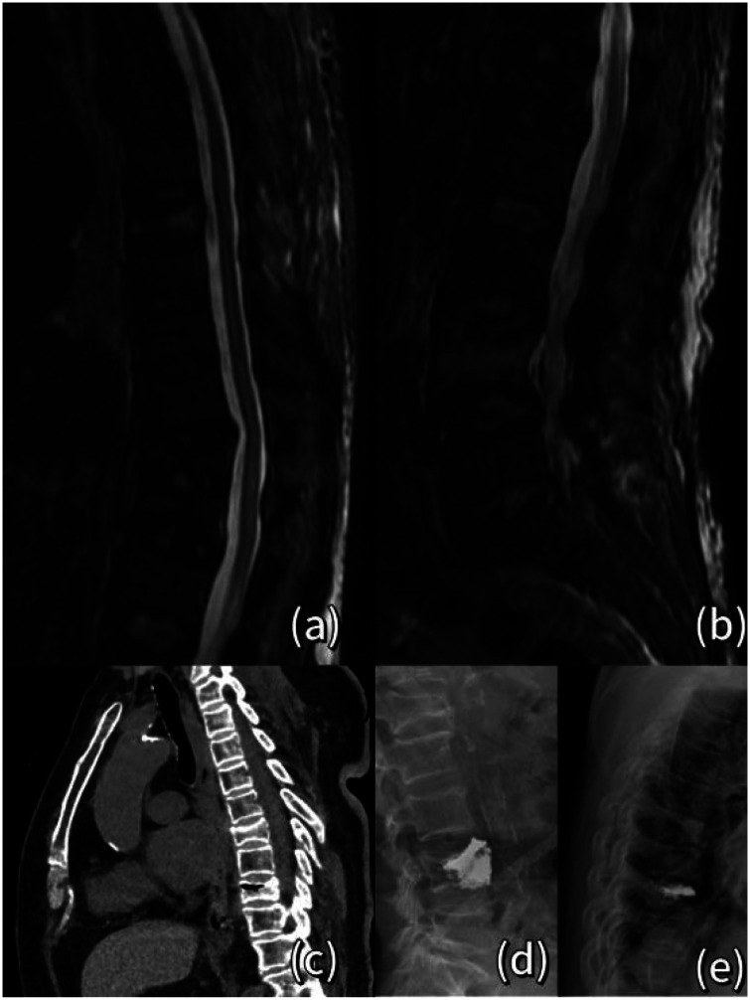
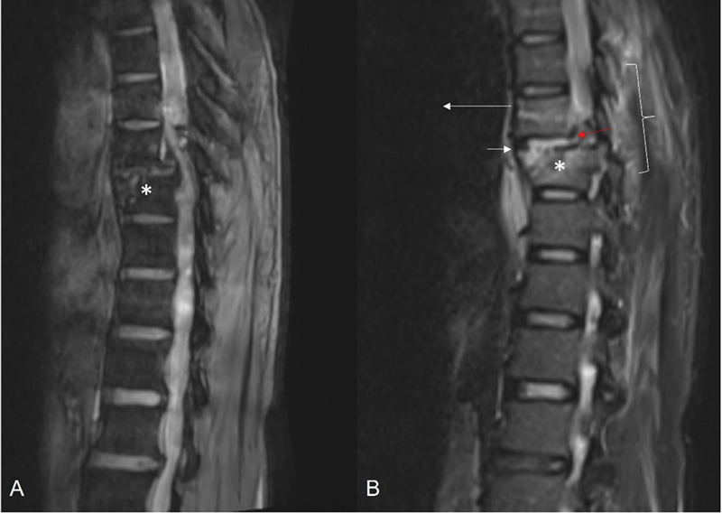

221 — Chấn thương cột sống: 3 cột Denis, TLICS & xẹp lành-ác / Spine trauma
Tags: pattern:chan-thuong-cot-song vung:cot-song score:TLICS
Mức chắc chắn (certainty): tổng hợp y văn (literature synthesis) — nhóm tự biên từ y văn mở (Indian J Radiol Imaging CC BY-NC-ND, J Int Med Res CC BY-NC), chưa gắn ca nguyên văn đơn lẻ.
1. Tổng quan — cột giữa là chìa khóa mất vững
- Mô hình 3 cột Denis: trước (1/2 trước thân đốt + đĩa), giữa (1/2 sau thân đốt + dây chằng dọc sau PLL), sau (cung sau + dây chằng) — TẠI SAO cột giữa vỡ = mất vững cơ học: cột giữa là trụ chịu nén chính, đồng thời là rào cản cuối ngăn mảnh xương chọc vào ống sống. Vỡ cột giữa làm thân đốt mất điểm tựa phía sau → gập góc (kyphosis) tiến triển và mảnh xương trôi ra sau chèn tủy.
- Trên cột sống ngực-thắt lưng (T10–L2 — vùng chuyển tiếp di động nhất, nơi cột sống ngực cứng chuyển sang cột sống thắt lưng linh hoạt), chấn thương năng lượng cao rất dễ gây vỡ cột giữa.
- TLICS (Thoracolumbar Injury Classification and Severity Score) chấm 3 thành phần (không phải chỉ hình thái): hình thái (morphology) 1–4 + phức hợp dây chằng sau (PLC) 0–3 + thần kinh (neurologic) 0–3. Điểm chót: ≥ 5 = mổ, ≤ 3 = bảo tồn, = 4 = tự quyết. Vì hình thái nặng đơn thuần (vỡ nát = 4) vẫn có thể bảo tồn nếu dây chằng sau còn lành và thần kinh nguyên vẹn.
- Đọc MRI chứ không chỉ CT: CT thấy xương nhưng không thấy dây chằng — chấn thương cột giữa với tăng tín hiệu STIR dây chằng liên gai/sau gai chứng tỏ PLC đã đứt → TLICS tăng 3 điểm → lật quyết định sang mổ.
- Xẹp loãng xương vs di căn: lành tính = xẹp lõm (wedge), bờ sau LỒI vào/không phá cuống, phù tủy lan cả thân (STIR sáng) + đường đứt gãy thân đốt + không khối ngoài màng; ác tính = lồi bờ sau, HỦY CUỐNG (mất "mắt cúi" còn gọi là owl-eye/mắt cúi — trên CT ngang là mất viền xương trắng của hai cuống), khối mô mềm ngoài màng, còn chừa đĩa đệm.

Mô hình 3 cột Denis: cột trước (thân đốt trước + đĩa + dây chằng dọc trước ALL), cột giữa (1/3 sau thân đốt + PLL), cột sau (cung sau + phức hợp dây chằng sau PLC). Nguồn: Indian J Radiol Imaging, CC BY-NC-ND 4.0 (giữ nguyên bản).2. Gamut sau ngã/tai nạn + đau lưng người già (Gamut)
- Vỡ 3 cột + liệt: mổ nẹp + giải ép — corticoid tủy còn bàn cãi.
- Xẹp hình chêm + loãng xương + không khối: tạo hình đốt sống (vertebroplasty/kyphoplasty)/đeo nẹp + chống loãng xương.
- Hủy cuống (mất mắt cúi) + khối + chừa đĩa: di căn — PET + xạ/mổ.
- Tụ máu ngoài màng cứng sau chấn thương: chèn tủy tiến triển — mổ tối khẩn.
- Vỡ ngang qua thân đốt + đứt ngang đĩa (distraction — vỡ Chance/seat-belt): dây an toàn ở bụng làm đứt cả 3 cột theo lực kéo ngang — cực kỳ dễ bỏ sót vì không có mảnh xương đè tủy rõ.
3. Bảng so sánh phân biệt (ma trận đối chiếu)
| Thực thể (entity) | Hình ảnh điển hình | Chốt vào (rule-in) | Chốt loại (rule-out) | Gợi ý xác nhận |
|---|---|---|---|---|
| Mất vững (Denis/TLICS) | Vỡ cột giữa + di lệch + hở dây chằng sau (STIR sáng) | TLICS ≥ 5 = mổ | TLICS ≤ 3 → nẹp + theo dõi | CT 3D + MRI STIR dây chằng |
| Xẹp loãng xương (lành) | Xẹp lõm hình chêm + phù tủy lan tỏa (STIR sáng) + bờ sau LỒI vào, lõm | Già + loãng xương (DXA ≤ −2,5) + không khối/cuống | Lồi bờ sau + hủy cuống → ác | DXA + tạo hình/khâu |
| Xẹp ác tính (di căn/myeloma) | Lồi bờ sau + hủy cuống (mất mắt cúi) + khối ngoài màng + chừa đĩa | Cuống + khối + tiền sử K | Phù đơn thuần + lõm → lành | PET + sinh thiết + xạ |
| Tụ máu ngoài màng | Thấu kính sau tủy + chèn tiến triển | Liệt tăng dần sau chấn thương | Không chèn → theo dõi | Mổ tối khẩn khi liệt |
| Vỡ ngang kiểu distraction (Chance) | Đường đứt ngang thân đốt ± đứt đĩa + mở rộng khoảng sau | Cơ chế dây an toàn + STIR dây chằng sau dương tính | Hình chêm đơn thuần → chèn ép | CT 3D + MRI STIR |
4. Protocol + TLICS flowchart
- CT dựng hình 3D (lát mỏng ≤ 1 mm) để phân tích thân đốt/cuống + MRI STIR cho PLC, đĩa, tủy (phù/chảy máu tủy). Ưu tiên MRI ở già có loãng xương để phân biệt lành/ác và ở trẻ có SCIWORA (tổn thương tủy không gãy xương thấy trên CT).
- DXA khi xẹp người già; chống loãng xương (canxi 1000 mg/ngày + vitamin D 800 IU/ngày; bisphosphonate/teriparatide tùy nguy cơ).
- Cột mốc TLICS: hình thái (nén 1, vỡ 2, mất vững kéo giãn 3, mất vững trượt 4) + PLC (toàn vẹn 0, nghi ngờ 2, đứt 3) + thần kinh (nguyên vẹn 0, tổn thương rễ/chùm đuôi ngựa 3, tủy không hoàn toàn 2, tủy hoàn toàn 3... tủy không hoàn toàn/đứt hoàn toàn tính khác nhau theo bảng gốc).
flowchart TD
A[Chấn thương/xẹp cột sống] --> B{Chấn thương hay xẹp tự phát?}
B -->|Xẹp tự phát người già| X[MRI STIR: phù lan + lõm = lành; hủy cuống + khối = ác]
X --> X1[Lành: tạo hình/nẹp + DXA]
X --> X2[Ác: PET + xạ/mổ, cấm bơm xi măng mù]
B -->|Chấn thương| C{TLICS?}
C -->|≥5| D[Mổ nẹp + giải ép]
C -->|≤3| E[Nẹp + chống loãng xương]
C -->|4| F[Tự quyết theo bối cảnh + PLC trên MRI]

Vỡ burst hoàn toàn L2: (A) CT dựng sagittal, (B) CT ngang thấy vỡ cả thân đốt; (C) MRI T2W và (D) STIR lộ mảnh xương sau và phù tủy. Nguồn: Indian J Radiol Imaging, CC BY-NC-ND 4.0 (giữ nguyên bản).5. Cạm bẫy
- Vỡ Chance (dây an toàn) bỏ sót — đường đứt ngang thân đốt ± đứt đĩa không mảnh đè tủy rõ; chỉ STIR dây chằng sau + TLICS mới thấy mất vững. Ở bệnh nhân viêm cột sống dính khớp (ankylosing spondylitis), chấn thương nhẹ cũng đủ gây đường đứt ngang tương tự.
- Di căn gọi nhầm loãng xương → bơm xi măng vào u → luôn soi cuống + khối ngoài màng + đĩa còn chừa trước mọi tạo hình.
- Tổn thương tủy không gãy (SCIWORA — trẻ em): CT bình thường mà MRI tủy bất thường — không loại trừ tổn thương tủy chỉ bằng CT.
- Chỉ dựa CT để chấm TLICS: dây chằng không thấy trên CT → hay chấm thiếu điểm PLC và điều trị bảo tồn sai cho tổn thương mất vững.

Nhiều vỡ chêm (wedge impaction) thân đốt ngực: (A) gradient echo và (B) STIR — phù tủy các tầng vỡ. Nguồn: Indian J Radiol Imaging, CC BY-NC-ND 4.0 (giữ nguyên bản).
Xẹp đốt T8 cấp trên MRI STIR (a): phù tủy tăng tín hiệu lan tỏa trong thân đốt — dấu hiệu xẹp LÀNH tính do loãng xương (các panel còn lại: chụp cắt lớp tạo hình). Nguồn: J Int Med Res, CC BY-NC 4.0 (giữ nguyên bản).6. Tự lượng giá — Blind Quiz (ảnh trơn ngoài, đáp án trong)
Ca 1 — Ngã cao, vỡ L2. Nhìn CT, mô tả trước:
- Câu hỏi: Đây là loại vỡ gì? Cột nào đã vỡ? Mảnh xương sau có chèn không? Bước tiếp theo?
Bấm để hiện đáp án (findings + chẩn đoán)
- Dấu hiệu: vỡ burst hoàn toàn thân đốt với mảnh góc sau (retropulsed fragment) trôi vào ống sống trên CT (A/B) và MRI (C/D) — tức đã vỡ cột giữa.
- Chẩn đoán: vỡ mất vững cột giữa → chấm TLICS (hình thái + PLC trên STIR + thần kinh); TLICS ≥ 5 → mổ nẹp + giải ép.
- Nguồn ảnh: Indian J Radiol Imaging, CC BY-NC-ND 4.0.
Ca 2 — Bà 75 tuổi, đau lưng đột ngột, X-quang thấy xẹp đốt. Nhìn MRI:
- Câu hỏi: Tín hiệu trong thân đốt gợi ý gì? Lành hay ác? Cần soi thêm dấu hiệu nào?
Bấm để hiện đáp án (findings + chẩn đoán)
- Dấu hiệu: thân đốt tăng tín hiệu STIR lan tỏa (phù tủy) = tổn thương cấp; hình xẹp lõm, không lồi bờ sau, không hủy cuống, không khối ngoài màng.
- Chẩn đoán: xẹp loãng xương lành tính cấp (khác di căn). Xử trí: tạo hình/đeo nẹp + DXA + chống loãng xương.
- Nguồn ảnh: J Int Med Res, CC BY-NC 4.0.
Ca 3 — Tai nạn xe, đau cột sống ngực. Nhìn MRI sagittal:

- Câu hỏi: Có di lệch thân đốt không? Đây là mất vững kiểu gì? Tại sao nguy hiểm?
Bấm để hiện đáp án (findings + chẩn đoán)
- Dấu hiệu: di lệch (listhesis) thân đốt kèm tín hiệu bất thường dây chằng sau (STIR) — tổn thương dịch chuyển (translational injury), mất vững cả 3 cột.
- Chẩn đoán: mất vững trượt → TLICS hình thái 4 + hở PLC → điểm cao → mổ. Nguy hiểm vì dây chằng đứt làm cột sống mất ổn định, dễ chèn tủy khi vận chuyển/sinh hoạt.
- Nguồn ảnh: Indian J Radiol Imaging, CC BY-NC-ND 4.0.
Bài liên quan chéo
- 200 – Tổng quan Thần kinh
- 220 – Ống sống 3 khoang (đĩa vs u vs viêm)
- 222 – Viêm đốt sống (Pott vs vi khuẩn vs di căn)
- 331 – U ác ở người lớn (myeloma/di căn)
Ảnh
images/221_chan-thuong-cot-song_so-do_3cot-Denis_PMC12440593.jpg— mô hình 3 cột Denis (CC BY-NC-ND).images/221_chan-thuong-cot-song_CT_burst_PMC12440593.jpg— vỡ burst L2 (CC BY-NC-ND).images/221_chan-thuong-cot-song_MRI_wedge-STIR_PMC12440593.jpg— vỡ chêm nhiều tầng (CC BY-NC-ND).images/221_chan-thuong-cot-song_MRI_translational_PMC12440593.jpg— tổn thương dịch chuyển (CC BY-NC-ND).images/221_chan-thuong-cot-song_CT_distraction_PMC12440593.jpg— tổn thương distraction (CC BY-NC-ND).images/221_chan-thuong-cot-song_MRI_xep-STIR_PMC13031746.jpg— xẹp loãng xương cấp STIR (CC BY-NC).- Nguồn + giấy phép đầy đủ:
images/CREDITS.md; link gốc:sources.md.
Không dùng để chẩn đoán độc lập khi chưa có người hướng dẫn.